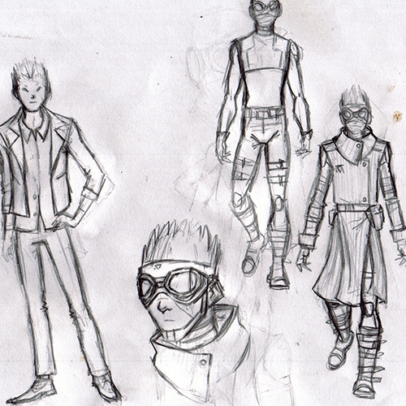
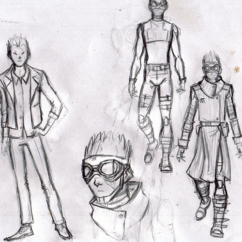
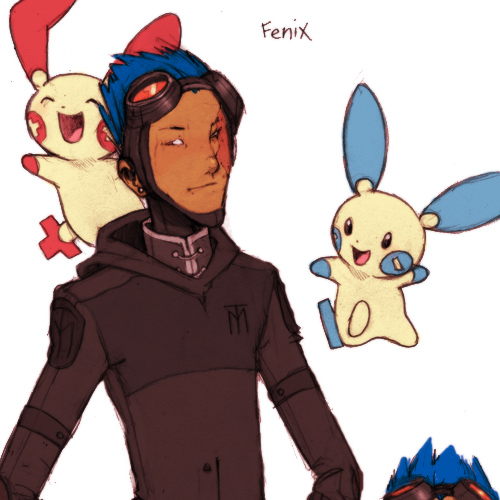
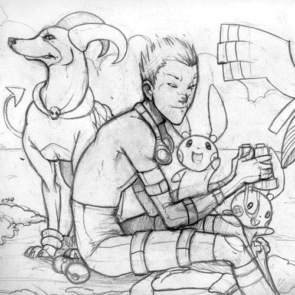
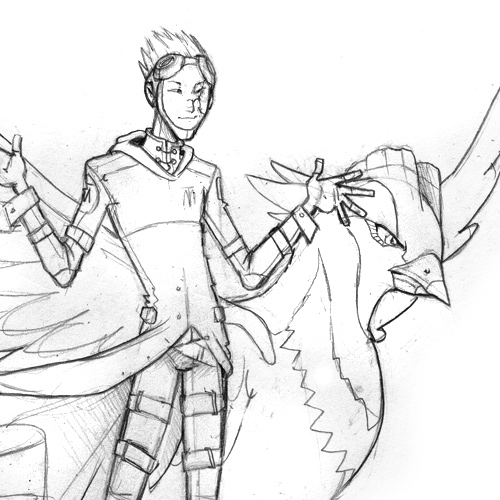
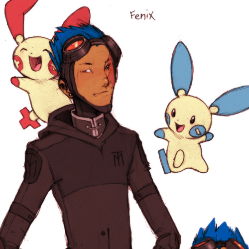
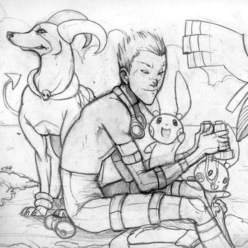
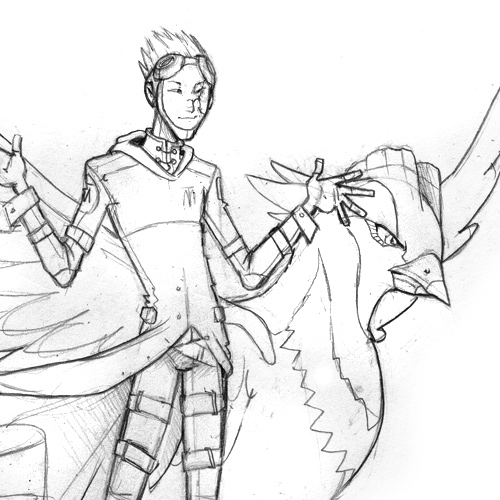

Fenton 'Fenix' Drayer
- Story: Goshin
- Age: 19
- Alignment: Lawful neutral
- Gender: Cis male
- Orientation: Gynesexual
- Appearance: Fenix has black hair with blue hues. He is very tall, and thin, with an athletic build, he's in great physical shape and does not tire easily. He bears a scar on half of his face, and covering his neck and shoulder on that same side.
Fenix says little of his past, even when asked, he will tell you it's of no interest. What is known, is that he has with Matrix for some time, and that his long service has granted him two Pokemon hybrids: Shargon and Swecleon.
He is best known for the scout work he does for the organization, spying on targets, and retrieving them when necessary. A loyal soldier, he does not question commandments, and will do whatever is asked of him. Out of touch with his feelings, Fenix has difficulty befriending others, or doing activities that doesn't involve training. His room is perfectly ordered, as his every aspect of his life. He keeps everything in check, his words and his emotions too.
Fenix does enjoy the company of Musi, another Matrix employee. Although their relationship deteriorates greatly, when someone steps between them. Fenix then becomes cruel, and unhinged.
Pokemon Team: Daedalus (Houndoom), Donov (Scolipede), Monad (Xatu), Shargon (Sharpedo and Flygon hybrid) and Swecleon (Swellow and Kecleon hybrid)

 
 
   
   
Comics
Fenix appeared in a PCBC Tournament in 2010. And in this one by Zaifon, where he gets his ass handed to him.